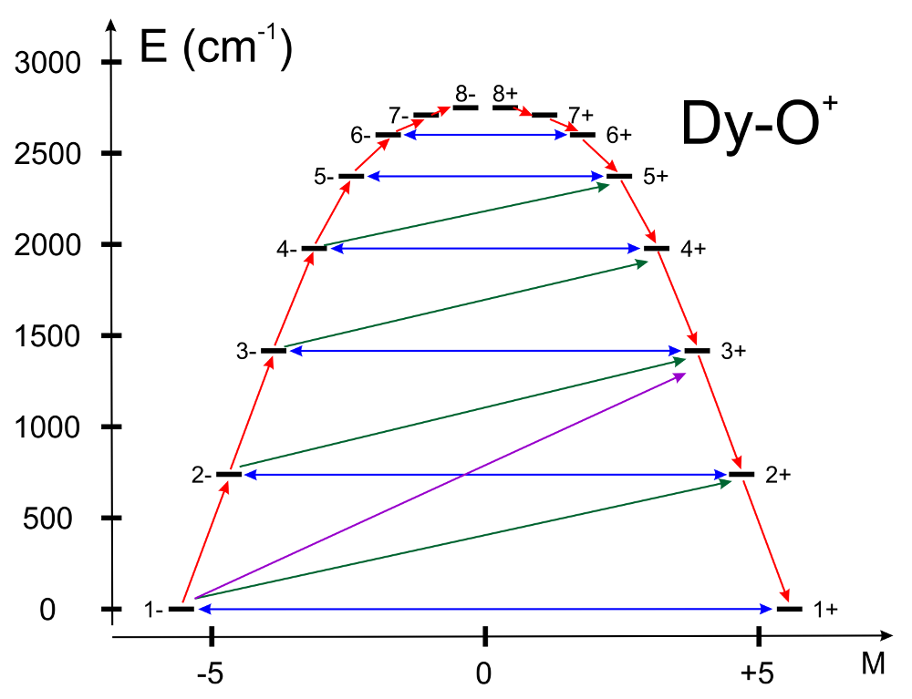

SINGLE_ANISO 模块接口（Interface to SINGLE_ANISO Module）¶
概述（General Description）¶
SINGLE_ANISO 程序可在从头算基础上（包括自旋-轨道相互作用）
非微扰地计算单核配合物和片段的有效自旋（赝自旋）哈密顿量
和静态磁性质。
它以 CASSCF/NEVPT2/SOC 计算所得的基态及若干激发自旋-轨道多重态
结果为起点。
可以计算以下量：
-
赝自旋磁哈密顿量的参数（方法学见 Liviu2012JCPs）：
-
一阶（赝自旋线性）塞曼劈裂张量（\(g\) 张量）， 包括确定乘积 \(g_X\cdot g_Y\cdot g_Z\) 的符号。
-
二阶（赝自旋双线性）零场劈裂张量（\(D\) 张量）。
-
高阶零场劈裂张量 \((D^2, D^4, D^6, ..., etc.)\)
-
高阶塞曼劈裂张量 \((G^1, G^3, G^5, ..., etc.)\)
-
镧系元素基态原子 \(\tilde{J}\) 多重态的晶场参数。UngurCF2017,Iwahara2018
-
镧系和过渡金属基态原子 \(\tilde{L}\) 项的晶场参数。
-
静态磁性质 Ungurphdthesis,Ungur2018book：
-
Van Vleck 磁化率张量 \(\chi_{\alpha\beta}(T)\)。
-
粉末磁化率函数 \(\chi(T)\)。
-
在外磁场 \(\vec H\) 指定方向下的磁化强度矢量 \(\vec M(\vec H)\)。
-
粉末磁化强度 \(\overline{M_{mol} }(H,T)\)。
-
磁化强度转矩函数 \(\vec{\tau}_{mol}(H,T)\)。
磁哈密顿量针对 CASSCF/SOC 计算所得的 \(N\) 个低能电子态的期望分组定义，
并按关系 \(N=2\tilde{S}+1\) 为它们指定一个赝自旋 \(\tilde{S}\)。
在没有自旋-轨道耦合时，赝自旋 \(\tilde{S}\) 约化为真实自旋 \(S\)。
例如，Kramers 二重态的两个波函数对应于赝自旋 \(\tilde{S}=1/2\)。
实现对赝自旋 \(\tilde{S}\) 的任意维数都成立，由关键词 MLTP 控制。
磁性质的计算通过激发态的热布居和塞曼混合，
考虑了激发态（包括在 CASSCF/CASPT2 计算中的
配合物或单核片段的配体场和电荷转移态）的贡献。
晶体中磁性分子之间的分子间交换相互作用
对所得磁性质的影响，由用户指定的唯象参数 \(zJ\) 描述。
运行 SINGLE_ANISO 计算¶
SINGLE_ANISO 本质上是一个独立工具（otool_single_aniso），
只要有从头算数据文件，即可从 shell 直接用其自己的输入文件调用：
然而这种用法可能不太方便，因为文件 single_aniso.input
必须包含数据文件的真实名称。
为方便用户，在 SINGLE_ANISO 与 ORCA 的 CASSCF 程序之间
实现了更深入的集成，如下所述。
作为用 SINGLE_ANISO 模块计算所研究化合物磁性质的先决条件，
在所研究化合物的量子化学计算阶段，
自旋-轨道耦合和其他相对论效应已被完全考虑在内。
从头算计算的必要信息以"数据文件"（datafile）的形式提供：
能谱、角动量积分等。
与 ORCA 的接口自动生成所需的数据文件。
根据所用计算方法，数据文件采用如下命名约定：
-
CASSCF+SOC+SINGLE_ANISO\(=>\)"$orca_input_name.CASSCF.anisofile" -
CASSCF+QD-NEVPT2+SOC+SINGLE_ANISO\(=>\)"$orca_input_name.NEVPT2.anisofile"
请注意，若请求了 CASSCF+QD-NEVPT2+SOC+SINGLE_ANISO 计算，
则 SINGLE_ANISO 将执行两次，并生成上述两个数据文件。
接口将在 CASSCF/aniso 子块中提供的关键词信息
生成 SINGLE_ANISO 输入文件。
数据文件的文件名也自动包含在 SINGLE_ANISO 工具的输入文件中
（关键词 DATA），该文件同样由接口自动生成。
为 SINGLE_ANISO 工具生成的输入文件的命名约定是
"$orca_input_name.anisofile"。
SINGLE_ANISO 程序的所有关键词都可以在 CASSCF/ANISO 子块中指定。
它们在 aniso.keywords 一节中介绍。
另外，也可以通过在 ANISO 子块中用关键词 InputNameOnDisk
设置文件名，将一个可用的 SINGLE_ANISO 输入文件
直接传递给 CASSCF 模块。
下面给出一个假想 Co(II) 化合物在 CASSCF/SOC/SINGLE_ANISO
方法学内进行磁性质计算的完整 ORCA 输入示例：
16 structure (0 4) Co -2.80118000 9.91634000 19.40386000 O -3.59660000 12.00284000 20.51731000 O -5.12835000 10.85934000 19.53431000 O -5.70975000 12.39302000 20.99406000 O -1.30202341 11.67611386 19.17300658 O -3.84191000 9.45315000 21.48634000 O -1.27500262 8.12582233 19.18634310 O -3.94611990 9.65426823 17.48476360 N -4.85020000 11.78071000 20.36823000 H -1.23636310 12.09677337 18.41017549 H -1.07910455 7.59540828 19.85227241 H -3.30514987 9.28034259 22.26327382 H -4.79957696 9.43862752 21.55163236 H -4.64801074 9.00163025 17.42987361 H -3.73273676 10.19508893 16.72083912 H -0.75470916 11.94100908 19.91589125
! 6-31G TightSCF # basis set and other global ORCA settings
%maxcore 2000
%casscf nel 7
norb 5 # 7 electrons in 5 orbitals (3d shell)
mult 4, 2
nroots 10, 40 # 10 quartet and 40 doublet states
rel
dosoc true # include spin-orbit coupling
end
ANISO
doaniso true # generate datafile/input and call
# the SINGLE_ANISO module
MLTP 2,2,2,2 # group of spin-orbit states for which the pseudospin
# Hamiltonian is computed: 4 low-lying spin-orbit doublet states
TINT 0, 300, 301 # 301 steps in the temperature interval [0-300]
# for magnetic susceptibility (in Kelvin)
HINT 0, 7.0, 71 # 71 steps in the field interval [0-7]
# for molar magnetisation (in Tesla)
TMAG 1.0,1.2,1.8,2.5,3.6 # temperature points for which molar magnetisation
# is computed
CRYS_element "Co"
CRYS_charge 2
DoPLOT true # requires the ANISO to produce gnuplot scripts,
# datafiles and plots of various quantities
# Alternative to the snippet above. Provide separate input file:
# InputFile "$orca_input_name.anisoinput"
end
end
*xyz 0 4 # charge is 0 for this neutral compound
Co -2.80118000 9.91634000 19.40386000
O -3.59660000 12.00284000 20.51731000
O -5.12835000 10.85934000 19.53431000
O -5.70975000 12.39302000 20.99406000
O -1.30202341 11.67611386 19.17300658
O -3.84191000 9.45315000 21.48634000
O -1.27500262 8.12582233 19.18634310
O -3.94611990 9.65426823 17.48476360
N -4.85020000 11.78071000 20.36823000
H -1.23636310 12.09677337 18.41017549
H -1.07910455 7.59540828 19.85227241
H -3.30514987 9.28034259 22.26327382
H -4.79957696 9.43862752 21.55163236
H -4.64801074 9.00163025 17.42987361
H -3.73273676 10.19508893 16.72083912
H -0.75470916 11.94100908 19.91589125
*
上述输入使用了如下关键词：
MLTP 关键词要求为 4 组自旋-轨道态计算 \(g\) 张量，
每组的维数为 2（Kramers 或 Ising 二重态）。
TINT 要求在 0 K - 300 K 温度区间内、
均分为 300 个温度区间计算磁化率。
TMAG 要求在 6 个温度点计算粉末摩尔磁化强度，
单位为开尔文（K）：1.0 K、1.2 K、1.8 K、2.5 K、2.9 K 和 3.6 K。
HINT 定义磁场强度的范围，单位为特斯拉。
DoPLOT 关键词调用模块的绘图功能。
CRYS_element + CRYS_charge 请求计算 Co\(^{2+}\) 离子基项的晶场参数。
关于 SINGLE_ANISO 模块中关键词的更多信息，
请参阅 aniso.keywords 一节。
请务必检查 CASSCF 计算后得到的轨道。
在此特定情形下，活性轨道（45-49）定域在 Co 位点上，
并呈现主导的 3\(d\) 特征。
45 46 47 48 49
-0.37264 -0.36672 -0.36520 -0.36153 -0.35018
1.40513 1.40270 1.39998 1.39823 1.39395
-------- -------- -------- -------- --------
0 Co s 0.0 0.0 0.0 0.0 0.2
0 Co pz 0.1 0.1 0.1 0.0 0.0
0 Co px 0.0 0.2 0.0 0.0 0.1
0 Co py 0.1 0.1 0.0 0.0 0.1
0 Co dz2 23.6 39.5 10.0 2.0 23.5
0 Co dxz 12.8 30.8 48.6 4.4 2.2
0 Co dyz 46.5 10.4 19.3 20.8 2.4
0 Co dx2y2 6.9 0.3 21.2 69.2 1.6
0 Co dxy 9.5 17.6 0.2 2.8 68.0
我们看到在上面的输出部分中， 五个活性轨道的主要贡献来自 Co-3\(d\) 基函数。 这对常见过渡金属化合物是正常且符合预期的。 对于镧系化合物，七个活性轨道应主要来自 4\(f\) 壳层。 更大的活性空间必须仔细检查和分析。 我们在此请参阅本手册中描述 CASSCF 方法及如何实现收敛的相应章节 modelchemistries.casscf。
用 SINGLE_ANISO 模块计算的结果位于 ORCA 输出中 SOC 部分之后。
以下是对这些结果的解释。
%%%%%%%%%%%%%%%%%%%%%%%%%%%%%%%%%%%%%%%%%%%%%%%%%%%%%%%%%%%%%%%%%%%%%%%
CALCULATION OF PSEUDOSPIN HAMILTONIAN TENSORS FOR THE MULTIPLET 1 (effective S=1/2)
%%%%%%%%%%%%%%%%%%%%%%%%%%%%%%%%%%%%%%%%%%%%%%%%%%%%%%%%%%%%%%%%%%%%%%%
The pseudospin is defined in the basis of the following spin-orbit states:
spin-orbit state 1. energy(1) = 0.000 cm-1.
spin-orbit state 2. energy(2) = 0.000 cm-1.
g TENSOR:
|--------------------------------------------------------|
| MAIN VALUES | MAIN MAGNETIC AXES | x ,y ,z - initial Cartesian axes
|-------------------|----|----- x ------- y ------- z ---| Xm,Ym,Zm - main magnetic axes
| gX = 0.09871069 | Xm | -0.456536 -0.363638 0.811998 |
| gY = 0.11729280 | Ym | 0.643532 0.495246 0.583605 |
| gZ = 11.21949040 | Zm | -0.614361 0.788985 0.007914 |
|--------------------------------------------------------|
The sign of the product gX * gY * gZ for multiplet 1: < 0.
上面的部分展示了基态 Kramers 二重态的 \(g\) 张量。 由于 \(g_X\) 和 \(g_Y\) 远小于 \(g_Z\) 分量， \(Zm\) 轴被标为所计算分子的主磁轴（main magnetic axis）。 "Zm \(|\) -0.614361 0.788985 0.007914 \(|\)" 表示 \(Zm\) 矢量的笛卡尔分量。
若通过 CRYS_element 和 CRYS_charge 请求了晶场参数的计算，
输出中会出现如下部分：
%%%%%%%%%%%%%%%%%%%%%%%%%%%%%%%%%%%%%%%%%%%%%%%%%%%%%%%%%%%%%%%%%%%%%%%
CALCULATION OF CRYSTAL-FIELD PARAMETERS OF THE GROUND ATOMIC TERM, L = 3.
%%%%%%%%%%%%%%%%%%%%%%%%%%%%%%%%%%%%%%%%%%%%%%%%%%%%%%%%%%%%%%%%%%%%%%%
The parameters of the Crystal Field matrix are written in the coordinate system:
(Xm, Ym, Zm) -- the main magnetic axes of the ground pseudo-L = | 3> orbital multiplet.
Rotation matrix from the initial coordinate system to the employed coordinate system is:
-------------------------------------------------------------------|
x , y , z -- initial Cartesian axes |
Xm, Ym, Zm -- main magnetic axes |
x y z |
| Xm | -0.61155332461133 -0.79120321735748 0.00000000001900 |
R = | Ym | 0.79120321735748 -0.61155332461133 -0.00000000000264 |
| Zm | 0.00000000001371 0.00000000001342 1.00000000000000 |
-------------------------------------------------------------------|
Quantization axis is Zm.
----------------------------------------------------------------------------------------------|
Ab Initio Crystal-Field Splitting Matrix written in the basis of Pseudo-L Eigenfunctions |
----------------------------------------------------------------------------------------------|
| | -3 > | | -2 > |
----------|---------- REAL ----------- IMAGINARY ---|---------- REAL ----------- IMAGINARY ---|
< -3 | | -777.2218617165776 0.0000000000000 | -0.0000000454613 0.0000000351393 |
< -2 | | -0.0000000454613 -0.0000000351393 | 285.4563720817839 0.0000000000000 |
< -1 | | 0.0285952366255 -0.0055088548681 | 0.0000000002580 -0.0000000024089 |
< 0 | | -0.0000000160911 0.0000000604843 | 0.0001933353720 -0.0013498718536 |
< 1 | | 0.0116130821579 -0.0096419531309 | -0.0000000005651 -0.0000000026613 |
< 2 | | 0.0000000070279 -0.0000000332291 | 0.0141002831881 -0.0117070160056 |
< 3 | | -0.0000002782243 0.0000001745761 | -0.0000000070278 0.0000000332291 |
----------------------------------------------------------------------------------------------|
----------------------------------------------------------------------------------------------|
| | -1 > | | 0 > |
----------|---------- REAL ----------- IMAGINARY ---|---------- REAL ----------- IMAGINARY ---|
< -3 | | 0.0285952366255 0.0055088548681 | -0.0000000160911 -0.0000000604843 |
< -2 | | 0.0000000002580 0.0000000024089 | 0.0001933353720 0.0013498718536 |
< -1 | | 347.8121781289439 -0.0000000000000 | 0.0000000069613 -0.0000000861891 |
< 0 | | 0.0000000069613 0.0000000861891 | 287.9066230116981 0.0000000000000 |
< 1 | | -0.0106576508828 0.0003303251251 | -0.0000000069613 -0.0000000861891 |
< 2 | | 0.0000000005651 0.0000000026613 | 0.0001933353720 -0.0013498718536 |
< 3 | | 0.0116130821579 -0.0096419531309 | 0.0000000160911 -0.0000000604843 |
----------------------------------------------------------------------------------------------|
----------------------------------------------------------------------------------------------|
| | 1 > | | 2 > |
----------|---------- REAL ----------- IMAGINARY ---|---------- REAL ----------- IMAGINARY ---|
< -3 | | 0.0116130821579 0.0096419531309 | 0.0000000070279 0.0000000332291 |
< -2 | | -0.0000000005651 0.0000000026613 | 0.0141002831881 0.0117070160056 |
< -1 | | -0.0106576508828 -0.0003303251251 | 0.0000000005651 -0.0000000026613 |
< 0 | | -0.0000000069613 0.0000000861891 | 0.0001933353720 0.0013498718536 |
< 1 | | 347.8121781289439 -0.0000000000000 | -0.0000000002580 -0.0000000024089 |
< 2 | | -0.0000000002580 0.0000000024089 | 285.4563720817837 0.0000000000000 |
< 3 | | 0.0285952366255 -0.0055088548681 | 0.0000000454613 0.0000000351392 |
----------------------------------------------------------------------------------------------|
----------------------------------------------------|
| | 3 > |
----------|---------- REAL ----------- IMAGINARY ---|
< -3 | | -0.0000002782241 -0.0000001745761 |
< -2 | | -0.0000000070278 -0.0000000332291 |
< -1 | | 0.0116130821579 0.0096419531309 |
< 0 | | 0.0000000160911 0.0000000604843 |
< 1 | | 0.0285952366255 0.0055088548681 |
< 2 | | 0.0000000454613 -0.0000000351392 |
< 3 | | -777.2218617165773 0.0000000000000 |
----------------------------------------------------|
在上面的部分中，来自自由离子 \(^{4}\)F 项的 Co\(^{2+}\) 位点低能 CASSCF 态 被变换到 (\(\tilde{L}=3\)) 的本征态， 低能 CASSCF 对角 \(7\times7\) 能量矩阵被重写在该基下。 非对角的"从头算晶场劈裂矩阵"打印在上述部分中。 在随后的输出部分中，所得晶场矩阵被分解为 不可约张量算符（Irreducible Tensorial Operators，ITO）的线性组合， 所得展开系数列在输出中。
参数针对若干组 ITO 给出。
********************************************************************************
The Crystal-Field Hamiltonian:
Hcf = SUM_{k,q} * [ B(k,q) * O(k,q) ];
where:
O(k,q) = Extended Stevens Operators (ESO)as defined in:
1. Rudowicz, C.; J.Phys.C: Solid State Phys.,18(1985) 1415-1430.
2. Implemented in the "EasySpin" function in MATLAB, www.easyspin.org.
k - the rank of the ITO, = 2, 4, 6, 8, 10, 12.
q - the component of the ITO, = -k, -k+1, ... 0, 1, ... k;
Knm are proportionality coefficients between the ESO and operators defined in
J. Chem. Phys., 137, 064112 (2012).
------------------------------------------------|
k | q | (K)^2 | B(k,q) |
----|-----|-------------|-----------------------|
2 | -2 | 1.50 | 0.44029016547734E-03 |
2 | -1 | 6.00 | 0.24547763681975E-08 |
2 | 0 | 1.00 | -0.43693326103120E+02 |
2 | 1 | 6.00 | -0.84162317914775E-08 |
2 | 2 | 1.50 | 0.12672200639220E-02 |
----|-----|-------------|-----------------------|
4 | -4 | 17.50 | 0.20185049671189E-03 |
4 | -3 | 140.00 | -0.24080325997038E-08 |
4 | -2 | 10.00 | 0.53646717565242E-04 |
4 | -1 | 20.00 | 0.99248109880376E-09 |
4 | 0 | 1.00 | -0.67496280141952E+00 |
4 | 1 | 20.00 | -0.53708624488205E-09 |
4 | 2 | 10.00 | 0.33333801678482E-03 |
4 | 3 | 140.00 | -0.66502585057483E-09 |
4 | 4 | 17.50 | 0.24311509626065E-03 |
----|-----|-------------|-----------------------|
6 | -6 | 57.75 | -0.48493356946616E-09 |
6 | -5 | 693.00 | 0.45219078679397E-09 |
6 | -4 | 31.50 | 0.11222605476277E-05 |
6 | -3 | 105.00 | -0.14936428088413E-09 |
6 | -2 | 26.25 | 0.68538037767693E-06 |
6 | -1 | 42.00 | -0.24067665895440E-09 |
6 | 0 | 1.00 | -0.18259217459128E-02 |
6 | 1 | 42.00 | 0.11394843516111E-11 |
6 | 2 | 26.25 | 0.48314159464149E-05 |
6 | 3 | 105.00 | -0.33636623245296E-10 |
6 | 4 | 31.50 | 0.13517294099051E-05 |
6 | 5 | 693.00 | 0.95637007025194E-10 |
6 | 6 | 57.75 | -0.77284500243776E-09 |
------------------------------------------------|
在下面的部分中，分析了各展开项对相应项或多重态 总能量劈裂的权重。
CUMULATIVE WEIGHT OF INDIVIDUAL-RANK OPERATORS ON THE CRYSTAL FIELD SPLITTING:
O2 :------------------------------------------: 70.094642 %.
O2 + O4 :-------------------------------------: 99.417093 %.
O2 + O4 + O6 :--------------------------------: 100.000000 %.
ENERGY SPLITTING INDUCED BY CUMULATIVE INDIVIDUAL-RANK OPERATORS (in cm-1).
----------|---------------|---------------|---------------|---------------|
L = 3 | RASSCF | ONLY | ONLY | ONLY |
| INITIAL | O2 | O2+O4 | O2+O4+O6 |
----------|---------------|---------------|---------------|---------------|
w.f. 1 | 0.00000000 | 0.00000000 | 0.00000000 | 0.00000000 |
w.f. 2 | 0.00000220 | 0.00000000 | 0.00000149 | 0.00000220 |
w.f. 3 | 1062.65990786 | 655.39989137 | 1058.22649805 | 1062.65990786 |
w.f. 4 | 1062.69656233 | 655.39989157 | 1060.35861560 | 1062.69656233 |
w.f. 5 | 1065.12848829 | 1048.63177735 | 1060.39653667 | 1065.12848829 |
w.f. 6 | 1125.02338078 | 1048.64787570 | 1129.62295551 | 1125.02338078 |
w.f. 7 | 1125.04470493 | 1179.71980502 | 1129.64777494 | 1125.04470493 |
----------|---------------|---------------|---------------|---------------|
WEIGHT OF INDIVIDUAL-RANK OPERATORS ON THE CRYSTAL FIELD SPLITTING:
O2 :-----------------------------------------: 70.094642 %.
O4 :-----------------------------------------: 29.322451 %.
O6 :-----------------------------------------: 0.582907 %.
ENERGY SPLITTING INDUCED BY INDIVIDUAL-RANK OPERATORS (in cm-1).
----------|---------------|---------------|---------------|---------------|
L = 3 | RASSCF | ONLY | ONLY | ONLY |
| INITIAL | O2 | O4 | O6 |
----------|---------------|---------------|---------------|---------------|
w.f. 1 | 0.00000000 | 0.00000000 | 0.00000000 | 0.00000000 |
w.f. 2 | 0.00000220 | 0.00000000 | 121.49328633 | 0.00351330 |
w.f. 3 | 1062.65990786 | 655.39989137 | 121.49330341 | 4.60307936 |
w.f. 4 | 1062.69656233 | 655.39989157 | 202.46860036 | 4.60307986 |
w.f. 5 | 1065.12848829 | 1048.63177735 | 202.50909974 | 6.90310777 |
w.f. 6 | 1125.02338078 | 1048.64787570 | 526.45202593 | 6.90437338 |
w.f. 7 | 1125.04470493 | 1179.71980502 | 526.48994463 | 11.50506445 |
----------|---------------|---------------|---------------|---------------|
WEIGHT OF INDIVIDUAL CRYSTAL FIELD PARAMETERS ON THE CRYSTAL FIELD SPLITTING:
(in descending order):
CFP are given in ITO used in J. Chem. Phys. 137, 064112 (2012).
-----------------------------------------------------|
k | q | B(k,q) | Weight (in %) |
--|-----|-----------------------|--------------------|
2 | 0 | -0.43693326103120E+02 | 70.08577012260780 |
4 | 0 | -0.67496280141952E+00 | 29.31873954450217 |
6 | 0 | -0.18259217459128E-02 | 0.58283348856981 |
4 | 2 | 0.10541073637635E-03 | 0.00457878555457 |
4 | 4 | 0.58115623682363E-04 | 0.00252440109385 |
4 | -4 | 0.48251497695683E-04 | 0.00209592749496 |
2 | 2 | 0.10346808494753E-02 | 0.00165966774870 |
4 | -2 | 0.16964581649793E-04 | 0.00073690009261 |
2 | -2 | 0.35949541472835E-03 | 0.00057664442705 |
6 | 2 | 0.94299583491020E-06 | 0.00030100389209 |
6 | 4 | 0.24084325388052E-06 | 0.00007687706999 |
6 | -4 | 0.19995783180553E-06 | 0.00006382645967 |
6 | -2 | 0.13377255211448E-06 | 0.00004270014495 |
6 | 6 | -0.10169893585902E-09 | 0.00000003246226 |
6 | -6 | -0.63812572794630E-10 | 0.00000002036895 |
6 | -1 | -0.37137214734348E-10 | 0.00000001185418 |
4 | -1 | 0.22192552033089E-09 | 0.00000000963990 |
4 | -3 | -0.20351589971646E-09 | 0.00000000884023 |
2 | 1 | -0.34359122410183E-08 | 0.00000000551133 |
6 | -5 | 0.17177307577593E-10 | 0.00000000548299 |
4 | 1 | -0.12009613533364E-09 | 0.00000000521668 |
6 | -3 | -0.14576461261073E-10 | 0.00000000465280 |
4 | 3 | -0.56204942711777E-10 | 0.00000000244141 |
2 | -1 | 0.10021582557877E-08 | 0.00000000160750 |
6 | 5 | 0.36329494838219E-11 | 0.00000000115964 |
6 | 3 | -0.32825983078827E-11 | 0.00000000104780 |
6 | 1 | 0.17582625268298E-12 | 0.00000000005612 |
--|-----|-----------------------|--------------------|
对于镧系化合物，相同的关键词（CRYS_element 和 CRYS_charge）
触发对应镧系离子基态 \(J-\) 多重态最低能量矩阵的能量分解。
%%%%%%%%%%%%%%%%%%%%%%%%%%%%%%%%%%%%%%%%%%%%%%%%%%%%%%%%%%%%%%%%%%%%%%%%%%%%%%%%%%%%%%%%%%%%%%%
CALCULATION OF THE MAGNETIC SUSCEPTIBILITY
%%%%%%%%%%%%%%%%%%%%%%%%%%%%%%%%%%%%%%%%%%%%%%%%%%%%%%%%%%%%%%%%%%%%%%%%%%%%%%%%%%%%%%%%%%%%%%%
Temperature dependence of the magnetic susceptibility will be calculated in 301 points,
equally distributed in temperature range 0.0 --- 300.0 K.
|----------------------------------------------------------------------------------------|
| | T | STATISTICAL | X*T | X*T | X | 1/X |
| | | SUM (Z) | (zJ=0) | | | |
|-----|----------------------------------------------------------------------------------|
|Units| Kelvin | --- | cm3*K/mol | cm3*K/mol | cm3/mol | mol/cm3 |
|-----|----------------------------------------------------------------------------------|
| | 0.000100 | 0.20000E+01 | 3.93592010 | 3.93592010 | 0.39359E+05 | 0.25407E-04 |
| | 1.000000 | 0.20000E+01 | 3.94046247 | 3.94046247 | 0.39405E+01 | 0.25378E+00 |
| | 2.000000 | 0.20000E+01 | 3.94500530 | 3.94500530 | 0.19725E+01 | 0.50697E+00 |
| | 3.000000 | 0.20000E+01 | 3.94954814 | 3.94954814 | 0.13165E+01 | 0.75958E+00 |
| | 4.000000 | 0.20000E+01 | 3.95409097 | 3.95409097 | 0.98852E+00 | 0.10116E+01 |
| | 5.000000 | 0.20000E+01 | 3.95863380 | 3.95863380 | 0.79173E+00 | 0.12631E+01 |
| | 6.000000 | 0.20000E+01 | 3.96317663 | 3.96317663 | 0.66053E+00 | 0.15139E+01 |
| | 7.000000 | 0.20000E+01 | 3.96771946 | 3.96771946 | 0.56682E+00 | 0.17642E+01 |
| | 8.000000 | 0.20000E+01 | 3.97226229 | 3.97226229 | 0.49653E+00 | 0.20140E+01 |
| | 9.000000 | 0.20000E+01 | 3.97680512 | 3.97680512 | 0.44187E+00 | 0.22631E+01 |
| | 10.000000 | 0.20000E+01 | 3.98134795 | 3.98134795 | 0.39813E+00 | 0.25117E+01 |
...
这一部分展示计算得到的磁化率。
该计算所用公式假定零场极限，即 \(H=0.0\) Tesla。
只要在 SINGLE_ANISO 输入中包含 DoPLOT 关键词，
就会在工作目录中创建一个名为 "XT_no_field.png" 的图，
使用上述数据。该图展示磁化率的温度依赖关系。
|------------------------------------------------------------------------------------------------------|
| VAN VLECK SUSCEPTIBILITY TENSOR FOR zJ = 0, in cm3*K/mol |
|------------------------------------------------------------------------------------------------------|
| T(K) | | SUSCEPTIBILITY TENSOR | MAIN VALUES | MAIN AXES |
|----------|-|----- x --------- y --------- z ---|---------------|------ x --------- y --------- z ----|
| |x| 4.456611 -5.721848 -0.057261 | X: 0.000914 | 0.45654560 0.36364537 -0.81199025 |
| 0.000100 |y| -5.721848 7.349367 0.073827 | Y: 0.001291 | 0.64352653 0.49524178 0.58361733 |
| |z| -0.057261 0.073827 0.001782 | Z: 11.805555 | -0.61436123 0.78898519 0.00791499 |
|----------|-|----- x --------- y --------- z ---|---------------|------ x --------- y --------- z ----|
| |x| 4.461142 -5.718873 -0.057275 | X: 0.007129 | 0.48578721 0.38619740 -0.78413160 |
| 1.000000 |y| -5.718873 7.351927 0.074460 | Y: 0.008275 | 0.62173382 0.47788368 0.62054351 |
| |z| -0.057275 0.074460 0.008319 | Z: 11.805983 | -0.61437598 0.78897323 0.00796220 |
|----------|-|----- x --------- y --------- z ---|---------------|------ x --------- y --------- z ----|
| |x| 4.465674 -5.715898 -0.057290 | X: 0.013344 | -0.49137357 -0.39055217 0.77847352 |
| 2.000000 |y| -5.715898 7.354486 0.075093 | Y: 0.015261 | 0.61731357 0.47435127 0.62762635 |
| |z| -0.057290 0.075093 0.014856 | Z: 11.806411 | -0.61439073 0.78896126 0.00800947 |
...
上面的部分展示磁化率张量的主轴如何随温度演化。
HIGH-FIELD POWDER MAGNETIZATION
(Units: Bohr magneton)
|-----------|---------------|---------------|---------------|---------------|---------------|
| H(T) |STATISTICAL SUM| 1.000 K. | 1.200 K. | 1.800 K. | 2.500 K. |
|-----------|---------------|---------------|---------------|---------------|---------------|
| 0.000100 | 1.9995371 | 0.0007055560 | 0.0005880989 | 0.0003923371 | 0.0002827105 |
| 0.100000 | 1.6293687 | 0.6863212310 | 0.5768343572 | 0.3889480349 | 0.2814379254 |
| 0.200000 | 1.3961049 | 1.2730827904 | 1.0928431358 | 0.7585259147 | 0.5554332924 |
| 0.300000 | 1.2492960 | 1.7176941099 | 1.5137449727 | 1.0936561795 | 0.8154486026 |
| 0.400000 | 1.1568991 | 2.0312460704 | 1.8358752195 | 1.3858429640 | 1.0565149122 |
| 0.500000 | 1.0987474 | 2.2456644189 | 2.0736324473 | 1.6329635867 | 1.2755212118 |
| 0.600000 | 1.0621485 | 2.3917509695 | 2.2464760254 | 1.8374994655 | 1.4711430994 |
| 0.700000 | 1.0391143 | 2.4924803644 | 2.3720174309 | 2.0044495622 | 1.6435265950 |
| 0.800000 | 1.0246173 | 2.5633469179 | 2.4639356325 | 2.1396808073 | 1.7938697856 |
| 0.900000 | 1.0154934 | 2.6144012337 | 2.5321303741 | 2.2489088878 | 1.9240150206 |
| 1.000000 | 1.0097510 | 2.6521008670 | 2.5835380488 | 2.3371993536 | 2.0361143785 |
| 1.100000 | 1.0061370 | 2.6806180412 | 2.6229602467 | 2.4088035375 | 2.1323879997 |
| 1.200000 | 1.0038624 | 2.7026854246 | 2.6537186141 | 2.4671744880 | 2.2149684436 |
| 1.300000 | 1.0024309 | 2.7201250266 | 2.6781249799 | 2.5150622492 | 2.2858129074 |
| 1.400000 | 1.0015299 | 2.7341759016 | 2.6978046065 | 2.5546323752 | 2.3466634357 |
...
这一部分展示粉末摩尔磁化强度的场依赖关系。
可通过在 SINGLE_ANISO 输入文件中使用 DoPLOT 关键词
创建名为 "MH.png" 的图。
在 ORCA 中对镧系化合物运行 CASSCF 计算
可能比过渡金属化合物稍显麻烦，因为该方法的收敛问题。
不过，按照 modelchemistries.casscf 一节的说明
以及本手册和论坛上的相关提示，计算是可以完成的。
根据我们的经验，CASSCF 计算收敛不佳的主要原因
来自占据活性空间的轨道不正确。
这个问题可以通过适当旋转分子轨道来克服，
使具有主导 4\(f\) 贡献的七个轨道被放入活性空间。
一旦活性轨道获得主导的 4\(f\) 权重，收敛就相当直接了。
下面我们以镧系片段 [Ce(COT) \(_{2}\)]\(^{-}\) （COT=(C\(_{8}\)H\({_8}\)) \(^{2-}\)）的计算为例进行说明：
33 structure (-1 2) Ce 5.97600100 5.09133100 13.17268800 C 5.47882500 2.98632700 11.42941100 C 4.38424700 3.88677900 11.27367600 H 4.21867900 4.06431900 10.35453600 C 3.47138800 4.59373300 12.09958800 H 2.87027600 5.12178400 11.58692300 C 3.21937800 4.72005000 13.49499100 C 3.84198900 4.08874200 14.61728000 H 3.46926600 4.38472800 15.43857500 C 4.86395700 3.14327700 14.81900800 H 4.97094200 2.92197400 15.73690500 C 5.77247800 2.44085400 13.98883400 H 6.34594800 1.86846400 14.48498500 C 6.03182900 2.38537000 12.60408600 H 6.75450600 1.80396200 12.40022700 C 6.40698800 7.65195200 12.14877700 C 6.11546300 7.83965300 13.53689900 H 5.47247100 8.52635500 13.66635300 C 6.52698400 7.27593700 14.77461400 H 6.07344100 7.67704500 15.50605500 C 7.44425200 6.26569500 15.21837900 C 8.37896000 5.47470700 14.49350900 H 8.88315100 4.90771300 15.06566300 C 8.74883600 5.31701900 13.13468700 H 9.45277500 4.68873000 13.02529900 C 8.32602800 5.86701900 11.90372100 H 8.81295200 5.51473700 11.16784000 C 7.36115600 6.80638600 11.50204100 H 7.33662500 6.90506000 10.55697400 H 5.93270067 2.68976505 10.50694264 H 5.83417492 8.22959522 11.45371334 H 2.43475960 5.39234559 13.77300645 H 7.40021961 6.07954201 16.27114118
!DKH DKH-DEF2-SVP slowconv KDIIS BP %basis newgto Ce "SARC2-DKH-QZVP" end end %scf MaxIter 500 end *xyz -1 2 Ce 5.97600100 5.09133100 13.17268800 C 5.47882500 2.98632700 11.42941100 C 4.38424700 3.88677900 11.27367600 H 4.21867900 4.06431900 10.35453600 C 3.47138800 4.59373300 12.09958800 H 2.87027600 5.12178400 11.58692300 C 3.21937800 4.72005000 13.49499100 C 3.84198900 4.08874200 14.61728000 H 3.46926600 4.38472800 15.43857500 C 4.86395700 3.14327700 14.81900800 H 4.97094200 2.92197400 15.73690500 C 5.77247800 2.44085400 13.98883400 H 6.34594800 1.86846400 14.48498500 C 6.03182900 2.38537000 12.60408600 H 6.75450600 1.80396200 12.40022700 C 6.40698800 7.65195200 12.14877700 C 6.11546300 7.83965300 13.53689900 H 5.47247100 8.52635500 13.66635300 C 6.52698400 7.27593700 14.77461400 H 6.07344100 7.67704500 15.50605500 C 7.44425200 6.26569500 15.21837900 C 8.37896000 5.47470700 14.49350900 H 8.88315100 4.90771300 15.06566300 C 8.74883600 5.31701900 13.13468700 H 9.45277500 4.68873000 13.02529900 C 8.32602800 5.86701900 11.90372100 H 8.81295200 5.51473700 11.16784000 C 7.36115600 6.80638600 11.50204100 H 7.33662500 6.90506000 10.55697400 H 5.93270067 2.68976505 10.50694264 H 5.83417492 8.22959522 11.45371334 H 2.43475960 5.39234559 13.77300645 H 7.40021961 6.07954201 16.27114118 *
这是计算的第一步。
对于镧系等较重元素，我们必须用 DKH 关键词考虑相对论效应。
我们在计算中显式使用 KDIIS 以使收敛更平滑。
这一步之后将生成名为 "CeCOT2_1.gbw" 的轨道文件。
我们进一步用该 gbw 文件进行 CASSCF 计算。
!DKH DKH-DEF2-SVP TightSCF conv Moread
%moinp "CeCOT2_1.gbw"
%basis
newgto Ce "SARC2-DKH-QZVP" end
end
%casscf nel 1
norb 7 # 1 electrons in 7 f orbitals
mult 2
nroots 7 # 7 doublet states
rel
dosoc true # include spin-orbit coupling
end
end
*xyz -1 2
......
*
我们需要在 CASSCF 步骤后检查轨道，
所得轨道文件名为 "CeCOT2_2.gbw"。
85 86 87 88 89 90 91
0.45543 0.45310 0.27655 0.45085 0.45251 0.45760 0.45713
0.14286 0.14286 0.14286 0.14286 0.14286 0.14286 0.14286
-------- -------- -------- -------- -------- -------- --------
0 Ce f0 26.2 0.9 0.0 1.3 3.3 0.5 6.6
0 Ce f+1 5.4 20.2 0.0 24.0 3.4 5.6 39.1
0 Ce f-1 0.4 30.4 0.0 52.8 10.7 0.6 3.9
0 Ce f+2 3.8 0.2 0.7 1.4 4.7 76.7 10.7
0 Ce f-2 50.7 0.7 0.0 2.1 4.2 4.0 1.3
0 Ce f+3 8.2 22.0 0.0 1.2 55.8 0.0 11.6
0 Ce f-3 4.7 25.3 0.0 16.5 17.1 10.1 25.2
轨道 85、86、88-91 和 130 是占据的、强金属性的 \(4f\) 轨道。
作为比较，收敛的 CASSCF 轨道是纯 \(4f\) 轨道（99% 基于金属）。
轨道需要旋转以适应活性空间（85-91）。
然后我们可以用 CASSCF/SOC 计算的结果调用 SINGLE_ANISO 程序。
!DKH DKH-DEF2-SVP TightSCF conv Moread
%moinp "CeCOT2_2.gbw"
%basis
newgto Ce "SARC2-DKH-QZVP" end
end
%scf rotate {87,130,90} end
end
%casscf nel 1
norb 7
mult 2
nroots 7
rel
dosoc true
end
ANISO
doaniso true
MLTP 2,2,2 # 3 Kramers doublets, J=5/2
MAVE 1, 12 # nsym=1, Lebedev grid number 12
XFIE 0.1 # the applied magnetic field is 0.1 T
CRYS_element "Ce"
CRYS_charge 3
NCUT 14
ABCC_abc 11.0735, 12.6738, 22.4854, 84.436, 86.690, 83.969
ABCC_center 0.82682, 0.31234, 0.78619
ZJPR -0.120
HEXP_temp 2.0, 3.0
HEXP_H 0.0, 1.0, 2.0, 3.0, 4.0
HEXP_M[0]= 0.0, 2.46, 2.86, 2.95, 2.98
HEXP_M[1]= 0.0, 2.04, 2.68, 2.87, 2.94
TEXP_temp 0.0, 10.0, 20.0, 30.0, 40.0, 50.0
TEXP_chiT 4.5, 4.5, 4.58, 4.62, 4.66, 4.70
UBAR true
DoPLOT true
ZEEM[0]=1.0, 0.0, 0.0
ZEEM[1]=0.0, 0.0, 1.0
ZEEM[2]=0.0, 1.0, 0.0
ZEEM[3]=0.75, 0.0, 0.25
end
end
*xyz -1 2
......
*
CASSCF/ANISO 子块中列出的关键词顺序无关紧要。
CASSCF/ANISO 关键词参考列表（Reference List of CASSCF/ANISO Keywords）¶
SINGLE_ANISO 唯一必需的关键词是 DATA，
它指定含从头算信息的数据文件名。
ORCA 接口会自动包含该关键词，因此这里不再介绍。
所有其他关键词都是额外的，允许对执行进行各种定制。
对于 EPR \(g\) 张量的计算，SINGLE_ANISO 唯一未知的变量
是赝自旋的维数（多重度）。
该信息可由 MLTP 关键词提供。
例如，在自旋-轨道耦合较弱的情形下，
有效自旋哈密顿量的多重度通常与最低项的多重度相同
（如高自旋 \(Fe^{3+}\)：\(S=\tilde{S}=5/2\)），
而在强各向异性情形下（镧系、锕系配合物、\(Co^{2+}\) 配合物、
近轨道简并的情形等），
最低能级形成一组态，其自旋可能与最低项的自旋大不相同。
在这些情形下，用户应指定对应于所选赝自旋值（\(2\tilde{S}+1\)）的多重度。
例如，在 \(Dy^{3+}\) 中基态项的自旋是 \(S=5/2\)，
但在大多数实际化合物中只考虑基态 Kramers 二重态。
在这种情形下，赝自旋的多重度等于 2（见 MLTP 关键词）。
对于镧系元素基态原子多重态 \(J\) 对应的晶场参数计算，
应使用关键词 CRYS_element 和 CRYS_charge 请求。
类似地，镧系和过渡金属化合物基态原子项 \(L\) 对应的晶场参数
也可用相同的关键词请求：CRYS_element 和 CRYS_charge。
请注意，ORCA CASSCF/ANISO 块中的关键词/语法
与真正的 SINGLE_ANISO 输入略有不同，
后者将某些关键词归在一起。
我们力求使控制关键词尽可能接近。
ORCA 接口内控制输入的可选通用关键词（CASSCF/ANISO 子块）：
InputNameOnDisk
: 该关键词读取 SINGLE_ANISO 输入文件的名称，
即写在引号之间的一个字符串。
示例：
ORCA 接口将添加 DATA 关键词，
并填入所执行计算的数据文件的特定名称。
该文件中提供的所有其他关键词必须遵循其原始名称，
如在 MOLCAS 中那样。
MLTP
: 要计算 \(g\)、\(D\) 及更高阶磁张量的分子多重态
（即自旋-轨道本征态的分组）数目（默认 MLTP=1）。
通过 MLTP 传递一个逗号分隔的数字列表，
指定每个多重态的维数。
默认是选择一个维数等于基态项多重度的多重态。
在强自旋-轨道耦合的情形下，必须使用该关键词。示例：
SINGLE_ANISO 将为 4 组态计算 \(g\) 张量：
2 组具有有效自旋 \(S=|3/2>\)，另外 2 组态是 Kramers 二重态。
TINT
: 指定评估磁化率的温度点。
程序读取三个数：\(T_{min}\)、\(T_{max}\) 和 \(nT\)。
-
\(T_{min}\) - 最低温度（默认 0.0 K）
-
\(T_{max}\) - 最高温度（默认 300.0 K）
-
\(nT\) - 温度点数（默认 101）
示例：
SINGLE_ANISO 将在 0.0 K - 330.0 K 温度区间内
均匀分布的 331 个点上计算磁化率的温度依赖关系。
HINT
: 指定在某一方向上评估磁化强度的磁场点。
程序读取三个数：\(H_{min}\)、\(H_{max}\) 和 \(nH\)。
-
\(H_{min}\) - 最低磁场（默认 0.0 T）
-
\(H_{max}\) - 最高磁场（默认 10.0 T）
-
\(nH\) - 磁场点数（默认 101）
示例：
SINGLE_ANISO 将在 0.0 T - 20.0 T 磁场区间内
均匀分布的 201 个点上计算摩尔磁化强度。
TMAG
: 指定计算场依赖磁化强度时的温度。
程序读取要计算磁化强度的温度（单位开尔文）。
默认在一个温度点（2.0 K）计算磁化强度。示例：
SINGLE_ANISO 将在 5 个温度点计算摩尔磁化强度
（1.8 K、2.0 K、3.4 K、4.0 K 和 5.0 K）。
ENCU
: 该关键词读取两个整数。
这两个参数（NK 和 MG）用于定义截断能，
即精确考虑塞曼相互作用的最低那些态的能量上限。
能量高于 \(E\)（见下文）的态对磁化强度的贡献
通过二阶微扰理论计算。
程序读取两个整数：\(NK\) 和 \(MG\)。
默认值为：\(NK=100, MG=100\)。
场依赖磁化强度在 TMAG 关键词给出的最高温度下计算。示例：
若 \(H_{max}\) = 10 T 且 TMAG = 1.8 K，则截断能为：
这意味着，能量低于 \(E = 1013.06258 (cm^{-1})\) 的
所有自旋-轨道态产生的磁化强度都将被精确计算
（即包含在精确塞曼对角化中）。
关键词 NCUT、ERAT 和 ENCU 用途相似。
若同时使用其中两个，优先级定义如下：
NCUT > ENCU > ERAT。
NCUT
: 该标志用于定义低能自旋-轨道态的截断能，
即精确考虑塞曼相互作用的那些态的能量上限。
能量高于最低 \(N_{CUT}\) 个态的态对磁化强度的贡献
通过二阶微扰理论计算。
程序读取一个整数。若该数大于自旋-轨道态总数（\(N_{SS}\)），
则 \(N_{CUT}\) 被设为 \(N_{SS}\)
（这意味着摩尔磁化强度将被精确计算，
即对所有场点使用完整的塞曼对角化）。
场依赖磁化强度在 TMAG 定义的温度值下计算。示例：
关键词 NCUT、ERAT 和 ENCU 用途相似。
若同时使用其中两个，优先级定义如下：
NCUT > ENCU > ERAT。
ERAT
: 该标志用于定义低能自旋-轨道态的截断能，
即精确考虑塞曼相互作用的那些态的能量上限。
程序读取一个实数，指定纳入精确塞曼哈密顿量的态数比例。
例如，0.5 表示纳入自旋-轨道计算的最低一半态
用于精确塞曼对角化。
示例：
关键词 NCUT、ERAT 和 ENCU 用途相似。
若同时使用其中两个，优先级定义如下：
NCUT > ENCU > ERAT。
MVEC_x MVEC_y MVEC_z
: MVEC_x、MVEC_y 和 MVEC_z
定义计算磁化强度矢量的若干方向。
这些方向以单位矢量形式给出，指定外加磁场的方向 i。
示例：
ZEEM
: 该关键词允许沿外加磁场的某些方向计算塞曼劈裂谱。
外加磁场的方向以每方向三个实数给出，指定沿各方向的投影。示例：
ZEEM[0] 1.0, 0.0, 0.0
ZEEM[1] 0.0, 1.0, 0.0
ZEEM[2] 0.0, 0.0, 1.0
ZEEM[3] 0.0, 1.0, 1.0
ZEEM[4] 1.0, 0.0, 1.0
ZEEM[5] 1.0, 1.0, 0.0
上述输入将请求沿六个方向计算塞曼谱：
笛卡尔轴 X、Y、Z（方向 1、2 和 3），
以及任意两个笛卡尔轴之间：分别为 YZ、XZ 和 XY。
程序将按单位长度对输入矢量重新归一化。
与 DoPLOT 关键词组合使用时，
将生成相应的 zeeman_energy_xxx.png 图像。
MAVE
: 该关键词需要两个整数，记作 MAVE_nsym 和 MAVE_ngrid。
参数 MAVE_nsym 和 MAVE_ngrid 指定粉末摩尔磁化强度
计算中的网格密度。
程序使用单位球面上的 Lebedev-Laikov 点分布。
参数是整数：\(n_{sym}\) 和 \(n_{grid}\)。
\(n_{sym}\) 定义球面的哪一部分用于平均。
它取三个值之一：1（半球）、2（四分之一球）或 3（八分之一球）。
\(n_{grid}\) 取值从 1（最小网格）到 32（最大网格，即最密）。
默认是在半球上积分（因为 \(M(H)=-M(-H)\)）：
\(n_{sym}=1\) 和 \(n_{sym}=15\)
（即 185 个点分布在半球上）。
对于对称化合物，粉末磁化强度可在球面更小的部分上平均，
从而减少积分点数。
用户有责任选择合适的积分方案。
请注意，程序的默认设置相当保守。
示例：
TEXP_temp TEXP_chiT
: 参数 TEXP_temp 和 TEXP_chiT
允许在实验点处计算磁化率 \(\chi T(T)\)。
实验温度（单位 \(K\)）和实验磁化率（单位 \(cm^3Kmol^{-1}\)）
以逗号分隔的列表读取。
若同时给出 TEXP 和 TINT 关键词，
将使用 TEXP，而忽略 TINT 输入。
示例：
HEXP_temp HEXP_H HEXP_M
: 三个关键词 HEXP_temp、HEXP_H 和 HEXP_M
使在实验点处计算摩尔磁化强度 \(M_{mol}(H)\) 成为可能。
实验磁场强度（单位 Tesla）和实验磁化强度（单位 \(\mu_{Bohr}\)）
以逗号分隔的列表读取。
若同时给出 HEXP 和 HINT 关键词，
将使用 HEXP，而忽略 HINT 输入。
磁化强度例程会打印与实验的标准偏差。示例：
HEXP_temp 2.0, 3.0
HEXP_H 0.0, 1.0, 2.0, 3.0, 4.0
HEXP_M[0]= 0.0, 2.46, 2.86, 2.95, 2.98 # exp. M at T=2.0 K
HEXP_M[1]= 0.0, 2.04, 2.68, 2.87, 2.94 # exp. M at T=3.0 K
ZJPR
: 该关键词指定作用于配合物自旋的平均分子场
唯象参数（平均分子间交换常数）的数值（单位 \(cm^{-1}\)）。
它用于所有磁性质的计算（不用于自旋哈密顿量）（默认 0.0）。
TORQ
: 该关键词指定计算磁化强度转矩函数 \(\vec{\tau}_{\alpha}\)
时的角度点数，它是温度、磁场强度和磁场取向的函数。
转矩在 TMAG 或 HEXP_temp 输入给出的所有温度下计算。
绕笛卡尔轴 X、Y 和 Z 执行三次转动。
PrintLevel
: 该关键词控制打印级别。
- 2 - 正常。（默认）
- 3 或更大（调试）
CRYS_element CRYS_charge
: 关键词 CRYS_element 和 CRYS_charge
请求计算作用于镧系元素基态原子多重态的全部 27 个晶场参数。
用 CRYS_element 设置镧系元素的化学符号。
注意元素符号必须用引号括起来。
电荷用 CRYS_charge 定义。
默认情况下程序不会计算晶场参数。
示例：
QUAX
: 该关键词控制计算作用于镧系元素基态原子多重态的晶场参数时的量子化轴。
在下一行，程序读取三个值之一：1、2 或 3。
-
1 - 量子化轴是基态赝自旋多重态的主磁轴 \(Zm\)， 其大小在
MLTP关键词中指定。（默认） -
2 - 量子化轴是整个原子多重态 \(|J,M_{J}>\) 的主磁轴 \(Zm\)。
-
3 - 量子化轴是原始笛卡尔 Z 轴。转动矩阵为单位矩阵。
示例：
UBAR
: 将 UBAR 设为 "true"，可估算单分子磁体
（single-molecule magnet）的阻塞能垒。
默认不计算它。该方法按照下图打印磁矩的跃迁矩阵元：

在此图中，通过连接相反磁化状态（\(n+ \rightarrow n-\)） 的磁矩跃迁矩阵元的大小， 估算所研究单分子磁体的定性性能图像。 能垒的高度由这样一个能量定性估算： 在该能量处矩阵元（\(n+ \rightarrow n-\)）足够大， 能在磁晶体中通常存在的（内）磁场（0.01-0.1 Tesla）下 诱导显著的隧穿劈裂。 对于上述例子，阻塞能垒在态（\(8+ \rightarrow 8-\)）处闭合。
所有磁矩跃迁矩阵元以 \(((|\mu_X|+|\mu_Y|+|\mu_Z|)/3)\) 给出。 数据以玻尔磁子（\(\mu_{Bohr}\)）为单位给出。
示例：
ABCC_abc ABCC_center
: 关键词 ABCC_abc 和 ABCC_center
设置在晶体学 \(abc\) 坐标系中计算磁轴和各向异性轴。
用 ABCC_abc，程序读取六个实数值，即
\(a, b, c, \alpha, \beta\) 和 \(\gamma\)，定义晶格。
数值之间必须用逗号分隔。
用 ABCC_center，程序读取磁中心的分数坐标
（来自 CIF 文件）——同样用逗号分隔。
假定用于从头算计算的 XYZ 坐标
没有将分子从其晶体学位置旋转或平移。
该输入将确保 SINGLE_ANISO 计算的所有张量
也在 \(abc\) 坐标系中给出。
输出中的计算值对应于位于相应各向异性轴上、
距金属位点 1.0 \(\mathring{A}\) 处的三个"哑原子"
的晶体学位置。示例：
XFIE
: 该关键词指定用 \(dM/dH\) 和 \(M/H\) 公式计算磁化率时
所加磁场的数值（单位 T）。
并给出与通常公式（在外加场趋于零的极限下）的比较。（默认 0.0）。示例：
该关键词与 DoPLOT 关键词一起将生成两幅附加图：
XT_with_field_dM_over_dH.png 和
XT_with_field_M_over_H.png，
分别对应上述两个公式中的每一个，
以及相应的 gnuplot 脚本和 gnuplot 数据文件。
DoPLOT
: 设为 "true" 时，程序通过与 linux 程序 gnuplot 的接口
生成若干图（png 或 eps 格式）。
该接口生成数据文件、gnuplot 脚本，并尝试执行脚本以生成图像。
只有在调用了相应函数时才会生成图。
会生成磁化率、摩尔磁化强度和阻塞能垒（UBAR）图。
文件命名为：XT_no_field.dat、XT_no_field.plt、
XT_no_field.png、MH.dat、MH.plt、MH.png、
BARRIER_TME.dat、BARRIER_ENE.dat、BARRIER.plt
和 BARRIER.png、zeeman_energy_xxx.png 等。
SINGLE_ANISO 产生的所有文件都在相应的输出部分中被引用。示例：
如何引用（How to cite）¶
若在使用 SINGLE_ANISO 的发表工作中引用如下论文，我们将不胜感激：
-
Chibotaru, L. F.; Ungur, L. J. Chem. Phys., 2012, 137, 064112.
-
Ungur, L. Chibotaru, L. F. Chem. Eur. J., 2017, 23, 3708-3718.
此外，赝自旋哈密顿量的定义及其推导等有用信息也可在该论文中找到。